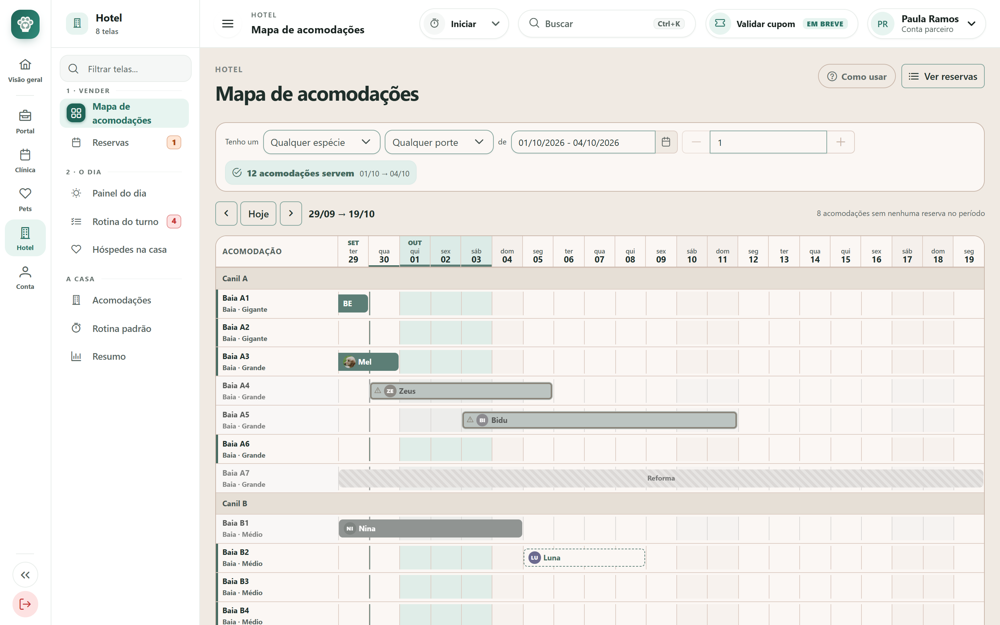
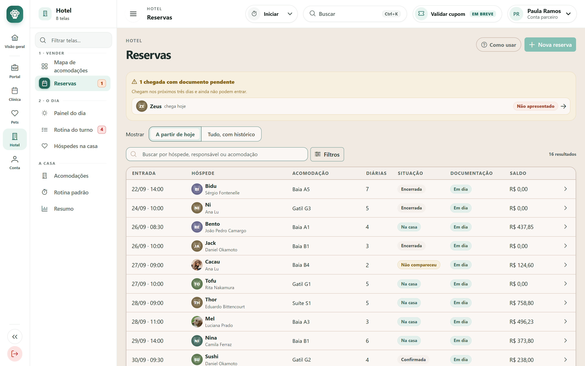
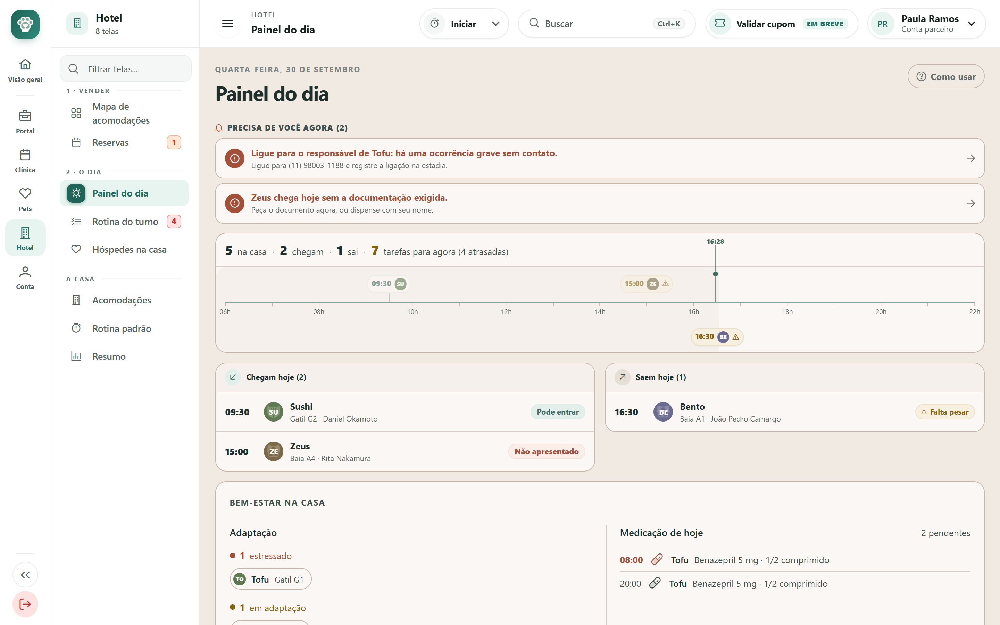
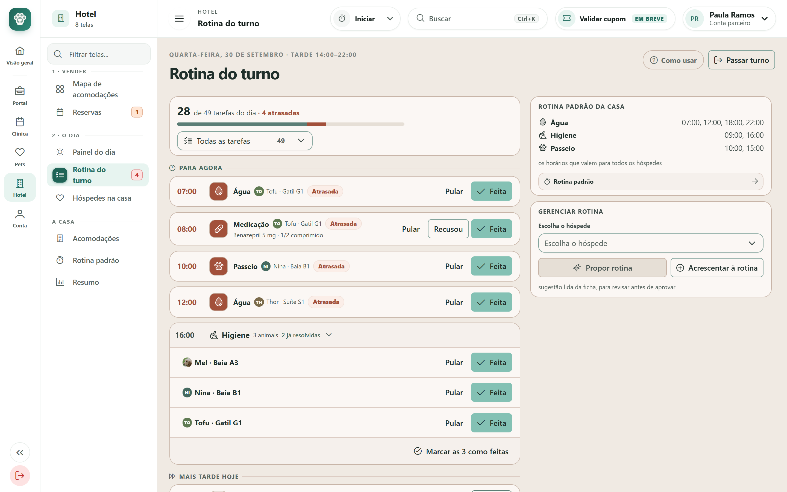
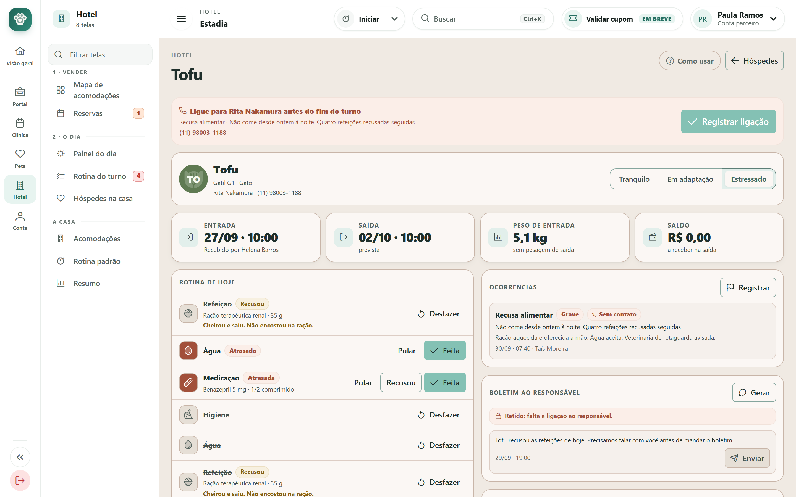
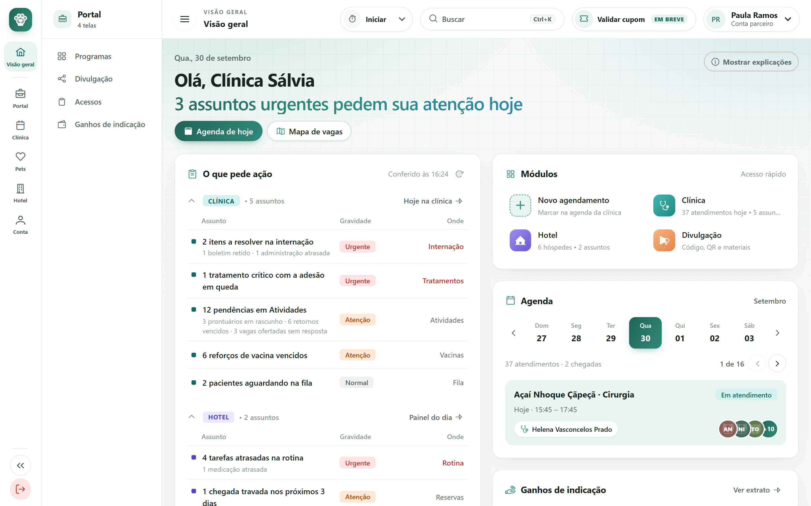

PetJourney · Portal administrativo
Duas semanas, dezessete entregas. Um módulo novo, o Hotel, do telefone ao check-out. O Clínico passa a contar a mesma história que o app do responsável vai contar. E o portal fala seis idiomas, um deles da direita para a esquerda.
Para a gestão e os sócios · 30 de setembro de 2026 · As imagens são capturas do sistema rodando, com dados de demonstração.
Em resumo
Hotel
10telas
Um módulo inteiro, novo: vender o período, receber o animal, cuidar e entregar. Cada tela tem o próprio "Como usar".
Clínico
5telas novas
Resumo do pet em 30 segundos, vacinas, tratamento em casa, a lista de tratamentos e a importação de planilha. Mais a anamnese por voz e sete ajustes em telas que já existiam.
Portal
6idiomas
Sérvio e árabe entraram; em árabe a tela inteira espelha. A Visão geral, primeira tela de todo mundo, foi refeita.
21/09
Sérvio e árabe · tema claro recalibrado · ajustes do Clínico pós-reunião · boletins
22 a 24/09
Módulo Hotel, e três rodadas de acabamento nas telas
24 a 28/09
Este pet em 30 segundos · anamnese por voz · o que vai para o app
29/09
Visão geral nova · importar pacientes de outro sistema
30/09
Vacinas e carteirinha · tratamento em casa · design novo, em andamento
PetJourney · Novidades de 16 a 30/09/2026
Hotel módulo novo · 22 a 24/09
Vende um período, recebe o animal, cuida dele e o entrega de volta. O menu do módulo segue essa ordem, e não "cadastros" e "relatórios".
Os quatro erros que custam cliente, impedidos por regra e não por lembrete
E a conta é feita contra o dia da saída: a antirrábica que vence no meio da estadia já não serve.
O tempo de lavar e secar entra na conta antes de a vaga voltar ao mapa.
Se algo sério acontece, o recado fica retido até alguém da casa ligar para o responsável.
O check-out não fecha enquanto cada pertence não for conferido.
PetJourney · Novidades de 16 a 30/09/2026
Hotel · 1 Vender
Toca o telefone: "tem vaga para o meu cão de 1 a 4 de outubro?". Cada linha é uma acomodação e cada coluna uma noite. O que se procura é o espaço vazio.

PetJourney · Novidades de 16 a 30/09/2026
Hotel · 1 Vender
Fim de tarde de quinta: "o que eu preciso resolver antes de amanhã?". A resposta está na faixa do topo, não na tabela.

PetJourney · Novidades de 16 a 30/09/2026
Hotel · 2 Receber
Oito da manhã: como vai ser o dia? A tela não é um resumo, é a lista do que fazer hoje.

PetJourney · Novidades de 16 a 30/09/2026
Hotel · 3 Cuidar
No corredor do canil, com o celular numa mão e o pote na outra. As tarefas vêm por horário, porque às oito alguém alimenta todos, e não abre ficha por ficha.

PetJourney · Novidades de 16 a 30/09/2026
Hotel · 3 Cuidar e 4 Entregar
O Tofu, um gato com doença renal, não come desde ontem, e a responsável está viajando. Tudo sobre uma hospedagem cabe numa tela.

PetJourney · Novidades de 16 a 30/09/2026
Hotel · A casa
Um cartão por animal, ordenado por quem precisa de você primeiro, com a barra da rotina do dia. Busca por nome do pet ou do responsável.
A casa monta a própria planta em quatro abas: corredores, tipos com o nome que ela usa ("Chalé", "Box"), tarifas por porte e temporadas. Preço novo não mexe em reserva já fechada.
Ocupação desenhada dia a dia, não em média: a média esconde a casa lotar no fim de semana e esvaziar na terça.
Acende uma parte da tela por vez e explica ali mesmo. Substituiu uma tela de manual, que ensinava longe do que ensinava.
Fora do escopo desta fase
| Nota fiscal e pagamento | O sistema calcula e registra a conta. Emitir nota e passar cartão é outro sistema. |
| Câmera ao vivo | A acomodação já diz que tem câmera; o vídeo em si não entra agora. |
| Creche | Entra e sai no mesmo dia: é outro produto, com outra grade e outro preço. |
| App do responsável | O hotel já registra o que o app mostraria: diário, fotos, recados. |
PetJourney · Novidades de 16 a 30/09/2026
Clínico
Quase tudo o que entrou no Clínico tem dois lados: o que a clínica vê no portal e o que o responsável vai ver no celular. O portal já mostra os dois, com um celular simulado ao lado da tela, e o que o app vai receber está escrito como contrato para o time do app.
É isso que torna as novidades difíceis de copiar: a vacina aplicada aparece no celular do responsável, a dose dada em casa aparece na ficha, e a pré-consulta respondida no app chega pronta à anamnese.
Telas novas no período
E dentro de telas que já existiam
Anamnese por voz e pré-consulta, estoque de vacinas, modelos de boletim, motivo da falta, edição de horário, aceite da fila e o resumo da consulta liberado para o app.
PetJourney · Novidades de 16 a 30/09/2026
Clínico 24 e 28/09
O veterinário está na porta da sala e tem trinta segundos para saber o que mudou desde a última vez.
Por que importa
O prontuário não sabe o que aconteceu em casa, e o diário do responsável não tem contexto clínico. O resumo junta os dois numa tela só, antes de a porta abrir.
Como funciona
As regras que valem dizer
PetJourney · Novidades de 16 a 30/09/2026
Clínico 28/09
A dor número um do veterinário é digitar: ele conversa com o responsável e depois redigita tudo.
Como funciona
As regras que valem dizer
PetJourney · Novidades de 16 a 30/09/2026
Clínico 21 e 30/09
O filhote chega com a carteirinha do pet shop. A recepção precisa saber qual lote usar, e o responsável quer ver no celular a vacina que acabou de ser aplicada.
Por que importa
É a prova mais fácil de mostrar e a mais difícil de copiar: exige um app com gente usando do outro lado.
Como funciona
A regra que vale dizer
PetJourney · Novidades de 16 a 30/09/2026
Clínico 30/09
"O tratamento não funcionou" e "o tratamento não foi feito" pedem condutas opostas, e o veterinário não tinha como saber qual era o caso.
Por que importa
A clínica fica sabendo a quem ligar quando um remédio crítico, como o diurético de um cardiopata, deixa de ser dado em casa.
Como funciona
As regras que valem dizer
PetJourney · Novidades de 16 a 30/09/2026
Clínico 29/09
Nenhuma clínica troca de sistema se tiver que redigitar quinze anos de pacientes.
Por que importa
É a porta de entrada comercial. E uma importação que perde dado sem avisar destrói a confiança no primeiro dia.
Como funciona, em três passos
As regras que valem dizer
PetJourney · Novidades de 16 a 30/09/2026
Clínico · nas telas que já existiam
Tipo, profissional, sala e hora mudam sem cancelar e recriar, o que mandava aviso de cancelamento a quem não teve nada cancelado.
Marcar falta pergunta o motivo e como a clínica falou com o responsável. "Quatro faltas, todas por transporte" vira um horário no fim da tarde.
Quem ainda nem foi procurado ganha um recorte próprio. Apurar vem antes de reagendar.
Modelos do plantão ("passou bem a noite", "pós-operatório") já com nome, medicações e temperatura. Paciente que piorou continua com o boletim retido até alguém ligar.
O aceite confere se a vaga ainda está livre. Se alguém ocupou no balcão, o paciente volta à fila na mesma posição.
Quem confirmou, e até quando o responsável pode cancelar pelo app. A recepção passa a ter resposta para "o app não me deixa cancelar".
Liberar é um passo separado de finalizar. O responsável recebe orientações, receita e retorno, sem mg/kg nem exame físico.
Bulário, diagnósticos, exames e salas traduzidos, sem nenhuma contraindicação perdida na tradução.
PetJourney · Novidades de 16 a 30/09/2026
Portal 29/09
Antes, quem abria o portal às oito via o painel financeiro da parceria. Agora vê o que está parado na clínica e no hotel, por ordem de gravidade.

Nome da clínica e agenda desta captura são de demonstração.
PetJourney · Novidades de 16 a 30/09/2026
Portal 21 e 23/09
Português, inglês (americano e britânico), espanhol, e agora sérvio (Srpski) e árabe (العربية).
Sérvio e árabe
Ainda em português ou em inglês
Tema claro recalibrado
Controles iguais em todo o portal
PetJourney · Novidades de 16 a 30/09/2026
Em andamento ainda não publicado
Decidido em 30/09. As capturas deste documento já mostram a moldura nova do menu e do cabeçalho, que ainda não está publicada.
Menu e cabeçalho brancos, com fio fino. O verde fica no logotipo e no item aberto, e não no fundo.
O seletor de tema saiu do cabeçalho e virou "Tema escuro", no menu da conta.
Mesmo fundo, mesmo título, mesmos botões da Visão geral.
Ordem combinada
| Agora | Redesenho de composição em Hoje na clínica, Internação, Agenda e Faltas. |
| Depois | Hotel, Portal do parceiro, e por último Conta e login. |
| O que motiva | O choque entre telas novas e antigas aparece ao navegar: um portal com duas caras parece dois produtos. |
PetJourney · Novidades de 16 a 30/09/2026
Para decidir
Foram tomadas para a demonstração andar e são defensáveis. Mas mudam o que o cliente vive, e não deveriam ficar decididas só pelo desenvolvimento.
É a mesma régua do servidor e do app, mas muda a lista de chamada: quem venceu há um ou dois dias aparece como "a vencer".
Sem lote e sem comprovante. Exigir comprovante trava o filhote que chegou com a carteirinha do pet shop.
O responsável pode desligar. Desligado por padrão, quase ninguém ligaria, e o alerta não existiria.
Duas doses puladas em 72 horas, ou menos da metade dada por quem dava 80% antes. Os números são uma aposta a calibrar com uso real.
No cartão do hóspede e no diálogo de falta, contra a regra de que a tela só registra o contato e a ligação sai do telefone da clínica.
Hoje é um motor de regras. Ou se troca o texto, ou se decide quando entra um modelo de verdade.
PetJourney · Novidades de 16 a 30/09/2026
Fechamento
Dito em voz alta, para não ser cobrado como esquecimento.
| O quê | Onde está hoje |
|---|---|
| Servidor para o Hotel e o Clínico | Os dois módulos rodam sobre dados de demonstração em memória: recarregar a página volta tudo ao começo. O próximo passo é o contrato com o back-end. |
| O app do responsável, do outro lado | Carteirinha, remédio em casa, resumo da consulta e boletim chegam a um celular simulado dentro do portal. As especificações para o time do app estão escritas. |
| Histórico na importação | Entram pacientes e responsáveis. Vacinas, consultas e peso ainda não. O formato do SimplesVet e do Vetus foi montado sem um arquivo real de nenhum dos dois. |
| Modelo de linguagem na anamnese | Hoje, regras locais, só em português. A tela já está pronta para receber um modelo. |
| Hotel: nota, pagamento, câmera, creche | Fora do escopo desta fase. |
Capturas do sistema rodando em 30/09/2026, com dados de demonstração · fonte: docs/novidades/setembro-2026